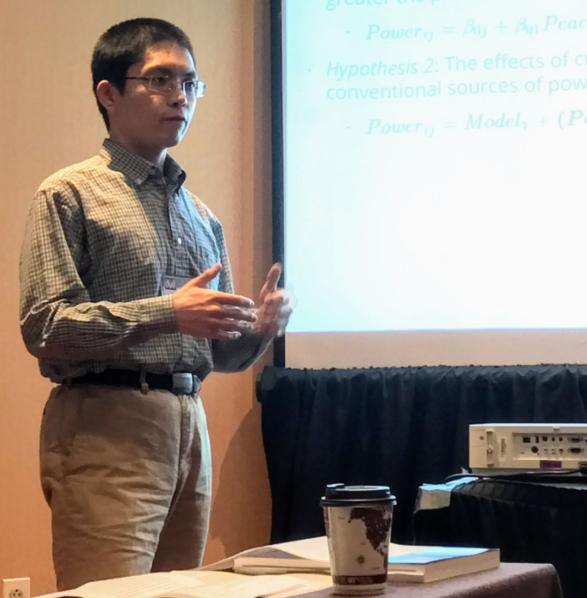

收录于合集 #学人专访 13个

**
**
学人简介： 胡悦，美国爱荷华大学（University of Iowa）政治学博士候选人，师从著名政治学家唐文方（Wenfang Tang）教授。其研究领域主要分为比较政治学（语言政策、政治传播、政治态度、政治文化、中国研究等）、政治学方法论（调查实验、文本分析、社会网络分析、空间分析、数据可视化等）以及国际政治（文化外交、国际文化关系、中国对外政策等）。在 Journal of Politics 、 Chinese Sociological Review 、 Research and Politics 等高水平英文期刊上发表多篇论文。此外，他于2016年获得爱荷华大学信息专业辅修证书，已经开发多种R语言软件包。
胡悦个人主页： https://sammo3182.github.io/
政观： 胡博士您好，感谢您在百忙之中接受我们的邀请。
胡悦： 谢谢政文观止给我提供这个和大家交流的机会。
政观： 从您的求学经历来看，虽然就读的都是政治学大类专业，但是从本科国际关系专业跳到了博士的政治学专业。您除了本科时期在南开大学取得学士学位，先后分别取得了加拿大和美国两所高校的硕士学位，最终在爱荷华大学政治学系攻读博士，并获得信息学专业的辅修证书，学术经历可谓十分丰富多彩，但也反映了您个人求学曲折经历，是什么原因推动了您下定决心这样做？
胡悦： 我求学的大体经历其实和很多朋友差不多，本科在国内，然后出国读硕士和博士。途经了若干站，也是出于对研究兴趣的不断探索和逐步清晰化。早在南开的时候，我就对政治文化有着浓厚的兴趣，虽然在国际关系专业，做的也是关于国际政治文化方面的研究。只是当时对“文化”这个概念理解并不深，仅当作一种理念或思想，还没有和具体的人的政治态度和行为联系起来。后来留学加拿大，在朱毓朝教授的指导下研究文化外交。当时学校研究生院要求每个研究生除Major（主修专业）外还要选择一个Minor（辅修专业），于是我就在朱教授的鼓励和引导下，选择了比较政治方向为Minor。由此，我的研究也逐步向比较政治转移。此后我来到美国，在谢复生（John Fuh-sheng Hsieh）教授指导下比较系统地学习比较政治理论和研究方法。谢教授毕业于美国罗彻斯特大学，深受理性主义理论影响，也对基于问卷调研的实证研究方法有丰富的经验。在他的影响下，我开始学着运用微观视角和调研数据来看待舆情和政治文化。也是在这个过程中，我较多地接触到了唐文方教授的研究，并最终有幸转到他所执教的爱荷华大学政治学系攻读博士。在这里我不单和唐文方教授以及William Reisinger、Frederick Solt等比较政治学专家继续学习比较政治，也有机会跟随Frederick Boehmke、Sara Mitchell等政治学方法论顶尖学者学习实证研究方法，也算是初步确立了自己以语言政治和政治传播为主要方向的实证研究领域。回头看来，过去的每一步都让我的研究兴趣不断明确，也是我不断寻求更适合的研究环境和学术资源而努力的过程。
政观： 我们看到您在社会科学研究方法领域特别是在调查实验、文本分析等方向上十分擅长，并且还担任爱荷华社会研究中心统计学顾问，您是如何学习这些方法的？
胡悦： 我的研究领域之一就是政治学方法论，所以对于这方面的训练会稍微多一些。我认为， 学习这些进阶方法的途径有很多，效果也会因人而异，但应该有一个共同的基础，那就是对基本的计量经济学知识的掌握，包含概率论等统计学常识以及OLS、MLE等基于既定分布性质的线性和非线性数据的处理方法。虽然这些基础知识或许无法满足我们处理复杂的实际数据的需要，但是熟谙它们能够帮助我们更好地理解其他更为复杂和高效的方法。 这一思路曾在我的《新兴的政治传播学实证研究方法评析》有所体现。在文章里我介绍了三种现下较为流行的政治传播研究方法，而追本溯源，它们都是为了解决一些传统方法的局限性发展而成的。只有了解了传统方法，才能更为全面地理解这些新方法因何而生，改变了什么，以及能解决和不能解决什么问题。
最后想和大家分享一个我学习研究方法的朴素感受：那就是方法是学不“全”的。如果你订阅 Political Analysis 期刊的话就会发现，每期都会包含大量对于既有方法的修正和改进及对新方法介绍和应用。如果你对里面每篇文章都仔细研读，或许能保障自己一直站在政治学研究方法的前沿。 然而，每个人的精力都是有限的，尤其是对于大多数不是以研究方法为主业的学者，在掌握了一定的研究方法工具后，比起随时掌握最新、最“难”的方法，将已学的方法妥善地运用到自己的实际研究中或许更为重要。 当然，这并不是说不要去学习新方法、新技能，而是说 不要为学方法而学方法 ， 要将有限的时间更为高效的分配以更好地服务于实际问题地研究与探索 。
政观： 我们了解到您从2015年到现在，每学期都在爱荷华社会科学研究中心的支持下开设有关R语言在社会科学应用的讲座，您能否简要介绍一下您目前在这一领域专注的问题？如果听众是零基础他该如何入门？
胡悦： 现在R语言在社会科学的应用非常广泛，也受到越来越多的社会科学家的关注和青睐。我在这个领域着力一方面是出于研究需要，会注意追踪计算机辅助文本分析等可用于政治学数据分析的技术方法；另一方面出于个人兴趣会较多地关注数据可视化方面的发展。在我的R语言社会科学应用讲座中，有两节课是专门讨论描述和统计数据可视化话题的。同时我也与同事合作研发编写了若干R应用软件（R packages）,其中一部分也是用于拓展R的数据可视化功能的。这些成果已都已向公众开放，并获得了还不错的下载量，也算是对我这方面投入的肯定和鼓励。
说到学习R语言，先说一点，我和很多政治学专业的朋友们一样，是纯文科生出身。在接触R之前唯一和编程有关的经历就是本科时候的计算机课程。所以我想说： 其一，文科生也是可以学习编程语言的。 我并不是什么编程或计算机方面的天才。所以如果我学得会，对于大部分文科生来说就应该都没问题。 其二， R 其实并没有很多朋友想象的那么难学。 现在不只我自己能依靠R完成基本所有的数据处理和分析工作，我身边已经有越来越多同事朋友开始学习和使用R。而且不单是政治学者，来过我讲座的或找过我咨询R语言应用的朋友里有很大一部分是来自经济学、心理学、社会学、教育学、图书馆学等各个学科。这也是激励我持续数年开设R入门和进阶课程的主要动力。所以， 对于想学 R 的朋友们，我的建议就是无需害怕，大胆去学。 至于如何入门， 我推荐的方法是去上一门课，网课或者工作坊都可以。然后尝试着依靠 R 去完成所有的研究任务，在应用中巩固已学的知识并继续不断地积累经验和新的知识。另外也建议大家去有意结识一些有过 R 使用经验的人，多和他们交流，也多和他们吐槽你在学习过程中遇到的困难。 吐着吐着，或许哪天就会发现你已经成为同事朋友中使用R的专家了。
政观： 众所周知，在美国的学术训练中，博士论文具有举足轻重的地位，我们政观曾有幸听过您关于博士论文一部分研究分享的讲座。您将国内的语言政策与公众的政治信任关联在一起，做出的研究令人耳目一新，您能否简单跟大家分享一下自己博士论文的写作经历，比如选题、内容与方法？
胡悦： 语言政策对政治信任影响这个课题在当下政治学的研究领域关注的不是很多，但确实是一个非常有意义的话题。只需想想我们每天都在使用语言，它更是我们接受政治信息、表达政治态度的主要途径，就可见其在政治生活中的重要地位。而对语言进行政治干预的一个重要途径就是语言政策。它是一个国家规范语言地位和语言关系的根本性政策，也是国家治理现代化的重要标志。可如果要问这个政策是如何影响国民的政治生活和政治态度的，我们其实并不清楚，相关的政治科学研究则更少。我决定研究这个题目，受到了我的导师唐文方教授的不少启发和指导，也接受了我论文委员会中来自政治学和社会语言学专家们的意见。
现在论文的主体部分已基本完成，并有一些有意思的发现。希望这些发现能在某些方面对现有研究有所贡献。特别是现有研究中对语言政策大多仅就其在民族问题或外来人口融合问题等方面加以考察。然而，语言和语言交流可不是只有在少数民族与多数民族或外来者和本地人之间才有的现象。它们存在于我们每个人每一天的社会和政治交流中。
在这种情况下，现有的基于民族语言学的语言政策理论的解释力就会很有限。这就需要从新的角度来思考语言政策对人们的政治情感和政治态度的影响。以中国为例，我们国家连续六十余年坚持推行并逐渐完善的语言政策究竟带来了什么样的政治结果？它是否影响了国民的政治态度和观点？为回答这些问题，我提出了一个暂且称为“官方语言场域” （Official Language Field, OLF）的初步理论（不同于语言学上的语域或语场的概念），用以解释语言政策对国民机构信任、过程信任和政治理念信任三方面的影响机制和效果。然后以中国大陆为案例，综合运用调查分析（survey analysis）、改良“变语配对”实验 (adjusted matched-guise experiment)以及计算机辅助文本分析(computer- assistant textanalysis)等方法，对理论假设进行了基于多次全国抽样问卷调查、实验室随机试验和百万量级政治语言文本等多种数据的综合分析。
政观： 那么在您的结论中，语言政策对于政治信任的影响有多大？其中的因果机制是怎样的？
胡悦： 我目前的研究发现，语言政策对国民对于政府的态度、对于公务人员的信任以及对于政治主流价值的认同等方面都有显著影响。记得我在做这个研究之前曾经问过身边不同年龄、不同职业和教育背景的一些朋友，在他们看来，使用普通话或方言会对他们带来什么影响。大多数人的回答是“应该没什么影响吧！我主要关注的是语言的内容，至于用普通话或者方言说，关系不大”。但实证结果表明，语言政策的影响或许比我们一般想象的要深入复杂。它能改变人们接收信息和表达观点的方式，更对待人接物和政治知识体系的建构都有着不可忽视的塑造和引导作用。另外，如同我在前面的问题已经提及的，我的目标是考察语言政策对于整体国民的影响，这方面也得到了实证证据的支持——语言政策的影响是具有普遍性的。
不过，有一点需要指出的是，我是反对语言决定论的。研究中得出了语言影响政治态度的证据并不代表着改变一个人的语言就能立即扭转其政治态度；期冀只要都说某种语言了，就能让所有人都拥有同等的政治信任也是不现实的。语言的影响就像很多其他因素一样是受一定条件限制的。比如我在研究中发现使用普通话会使人们对公务人员的态度产生非常有意思的影响，与我们一般认为的效果有很大不同。（至于是何种影响，容我卖个关子，这部分研究正在期刊审阅中，希望能尽快发表，到时有兴趣的朋友就可一窥端倪。也希望大家关注这篇文章。）但这里有一个重要条件，那就是发言者必须有一个明确的政治身份，是代表国家的。一旦把这个身份拿掉，语言的作用就会出现本质不同。
政观： 坦白讲，关于政治信任的研究正在逐渐壮大，当下已然形成了两大主流解释路径，一则是以理性选择主义为基础的制度绩效路径，一则是以公民文化、社会资本、威权主义价值观等为代表的政治文化路径，您运用实验法去测度语言政策对民众政治信任产生的影响，它算是既有解释路径的一种突破吗？未来对政治信任的测量方法又有哪些可能的发展方向？
胡悦： 请允许我分两部分来回答这个问题。首先您提及了理性（选择）主义和文化主义。它们和结构主义一起被Lichbach和Zuckerman并称为比较政治学的三种重要的研究途径，不只可以用来理解政治信任，也广泛地应用于其他比较政治研究。但正如我在2011年一篇合著文章中提出的，它们的不同只是理解方式的不同，其间并无高下之别，亦非水火不容。反而从我观察到的趋势来看，越来越多的研究倾向于根据研究问题需要将这些路径综合运用以实现理论上的互补。我对语言政策的研究就体现了这种特点。比方说，OLF理论对语言政策影响作用机制的一方面解释是官方语言能够让使用者获得特定的效应，比如更容易获取某种资源或者获得某些优势等，进而影响到了他们对现有政治体制的评价。这种解释和理性主义逻辑是一致的。但同时我又指出，使用官方语言能够让使用者更多地获取官方信息和政治意识并受其影响，这又是可以联系到文化主义的。而OLF理论与这传统三元路径不同在于，它突出的是绩效、文化等多种路径对人们的政治态度和思维的共同影响和协同作用。我也希望它能够在某种程度上启发研究者跳出既有框架，从新的角度去理解公共舆论和政治信任。
接下来，咱们来聊聊实验。无论上面提到的理性主义还是文化主义，它们都是研究路径。而实验法是一种研究方法。它们是研究过程中的两个部分。不过单就测量政治信任来说，实验确实为测量政治信任提供了新的可能。政治信任是一种综合的主观感受，这或许也是为什么长期以来学者们通常使用调查问卷形式直接询问受访者他们是否或在多大程度上相信政府及官员。在今后一段时期内，这种方式可能仍将是研究政治信任的重要途径。但与此同时，随着政治方法论及其配套技术的发展，我们也看到了使用其他方式的可能。比如在实验经济学中有一种信任实验，能够将抽象的信任概念具体化并放在人与人之间的互动中，这在某种程度上能够降低通过问卷方法由于题目设置和提问方式等造成的误差。我在研究语言政策对公务人员的信任中就部分借鉴了这种方法。另外，方法论学家已经发展出一系列问卷实验方法，比如list experiment, endorsement experiment, randomized response，以及一些借鉴生物学和神经科学的实验方法，比如测量血压、眼球移动等等的测试。它们如果结合传统的问卷调查方式也能够对政治信任的研究做出贡献。这是随着实验方法的进步衍生出来的新的测量方式。
政观： 对权威的尊崇、避免与他人公开冲突、强调和谐、集体主义乃至大一统，这些都是“具有中国特色的政治文化”现象，既有的一些研究认为它是中国乃至东亚地区政治信任的文化根源，那您认为能够为政治信任研究乃至政治学贡献什么样的新的知识呢？
胡悦： “具有中国特色的政治文化”， 这是个很有意思也非常值得我思考的问题，因为它提供了一条有别于我平时所受训练和研究模式的思维方式。在我受的训练中，即使仅研究单个国家、地区或时间段，也是可以实现对一个课题或一个学科的研究做出贡献的。而要做到这一点，通常有两种方式。以中国研究为例，要想做出学科贡献，一条路径是寻求中国和其他国家一样的地方，这样对于中国的研究成果就有可能帮助我们了解和中国近似的一类国家，进而推进学科对人类政治生活普遍规律的探索。另一条路是比较中国与其他国家的不同。但有两个前提：其一是所比较国家需在其他方面与中国有若干方面的近似性。只有其他方面都相似，而仅有一个方面不同，我们才有可能判定这个不同是观测结果不同的原因。其二是这种例子之间的差异性仍然需要有代表性，它们不只是两个例子不同，而是两类例子的不同。只有这样我们对两个例子的研究才有助于理解其他例子以及政治学普遍规律。
使用这两种方法中都有一个重要的要素，即寻求共性。而“中国特色的政治文化”似乎是反其道而行之，就是要强调特殊性，但又希望对整个学科研究做出贡献。这就是一个新思路，需要学者们进一步探索。但我认为，要实现这个目标至少要先回答好两个问题：第一，什么是“中国特色的政治文化现象”？正如您提到的，权威的尊崇、避免与他人公开冲突、强调和谐、集体主义大多不是中国独有的，很多东亚国家也有，其他地区也有。那它们还是“中国特色”吗？如果是特色，特色在哪？另外我们的社会在日新月异，人们的思想也在不断转变。80后说看不懂90后；90后说和00后有“代沟”。那么，如果我们说“中国特色”是强调和谐或集体主义，“和谐”和“集体”的概念对80后和00后的意义会一样么？如果不会，那我们说某种特色的时候，我们在说什么呢？
第二个问题是提“中国特色的政治文化现象”要做什么？，如果将这些政治文化现象的每个特定案例单独拿出来，将是非常好的研究项目，可以运用我上面提供的思路来帮助了解与中国有类似情况的一类国家。这应该是对学科的一种贡献，但从这个角度强调“特色”似乎就不那么重要了。而如果我们就是要强调人无我有，那就要想办法解释为什么“我们和你们不一样，但研究我们就是能帮助理解你们”。类似需要解决的问题还有很多，这都需要强调“中国特色的政治文化现象”的学者们运用缜密的理论思维、精妙的理论设计以及详实可靠的实际证据加以研究和解答。
政观： 最后，我们再来聊一聊技术性的问题。我们知道您在一流英文期刊上发表多篇论文，并获得过优秀论文奖励，这都是当今青年学者中难能可贵的，因此我们想请您简要谈谈论文写作特别是英文论文的写作经验。
胡悦： 在英文论文写作方面已经有很多优秀、资深的中外学者写过很多专门的指导性书和文章，供大家参考，我就不在这里班门弄斧了。但可以和大家分享两点个人体会： 其一是多做合作发表，尤其是在研究早期。 这里我非常感谢我的导师和我的其他合作者们， 每次和他们合作都能让我学到很多从书本和课堂上学不到的东西。从最开始的数据整理和探索到最后的期刊选择和回应评审的意见，处处皆学问。 虽然很多看起来都是“细枝末节”,比如某句话怎么组织或者图表注释都应说明什么内容等等，但都是 只有做了、错了、改了，才有了切身的体会 。
那么如果你还没找到合适的合作者怎么办呢？那就做个范本摹写吧。 这个方法我听很多前辈学者也说过。具体而言，就是 从权威期刊上找一到两篇你非常喜欢的文章，然后比照人家的写作模式、框架结构乃至行文用词来写自己的研究。 我们很多朋友都常常会遇到有内容就是写不出来的情况。这种方法就能在一定程度上帮你解决这个问题，而且做一遍下来你就会发现往往学到很多意想不到的东西。当然，范本摹写的另一种形式就是Replication，这个和我说的摹写从目的到形式都有不同，但也是非常棒的学习研究的方式。这方面Gary King 早在1995年 PS: Political Science and Politics 上就有专门文章，叙述的很详细，我就不赘述了。
我们常说发展中国家有时可以依靠后发优势实现跨越式发展，我觉得个人也是如此。以上就是我理解的可以创造后发优势，减少弯路的两个办法，供大家参考。当然肯定还要其他方法，也希望大家多多挖掘、相互借鉴。
政观： 很不好意思占用了您的大量时间，我们非常感谢您在百忙之中接受我们的专访。谢谢！
胡悦： 谢谢，不客气！
编后记 ：
这是政观开设的第3期专访，由于同样受制于时空，本次学人专访的形式再次采用笔访而非线下面访。今年2月正时值春节假期，正是放松休闲、阖家团聚的时候。但适逢胡悦博士处理毕业事务，在我们政观“不近人情”地将专访提纲发给胡悦博士之后，不久即收到胡博士非常详细的答复，令人惊喜。而我们在推送的过程中还得到了胡悦博士不厌其烦地修改建议，其严谨求实的学术态度着实令人感佩。事实上，小编自己在参加胡悦博士的讲座中曾听苏毓淞老师评论过美国政治学博士有三大标准：有论文发表、方法训练强、自行开发软件。这些胡悦博士都具备，值得国内学生乃至青年学者学习借鉴。而通过这次对胡博士的专访也让我们了解到美国博士学术训练的艰辛以及国内与他们之间的差距，显然这些差距将是我们未来重点努力的方向。
最后，我们再次感谢胡悦博士在百忙之中的热情分享，同时也感谢各位师长、各位朋友在一年来对政观的关心与支持。创办一年以来，政观从小到大，离不开各位师长、各位朋友线上线下的鞭策与鼓励。在本期推送后，为了能向读者朋友们更好地提供学术公共产品，也为了能更加制度化、规范化地运营公众号，政观编辑部将进入休假调整状态，拟定于本月中旬复更。未来我们致力于拓宽合作渠道，将政文观止打造成从事比较政治理论与方法、当代中国研究的松散学术平台，通过文献编译、方法推介、名刊速递、学人小传、学人专访、书单推送等不同形式介绍海内外比较政治经济学研究的前沿与经典。我们诚挚地欢迎海内外从事比较政治经济学理论与方法、当代中国研究的青年学者和在读博士对我们的批评指正，当然如果您有意接受我们的专访，请直接在后台留言，我们倍感荣幸。
政观编辑部
感谢您对学术公益品的支持！
微信扫一扫赞赏作者 __赞赏
已喜欢，对作者说句悄悄话
取消 __
发送给作者
发送
最多40字，当前共字
上一页 1/3 下一页
长按二维码向我转账
感谢您对学术公益品的支持！
受苹果公司新规定影响，微信 iOS 版的赞赏功能被关闭，可通过二维码转账支持公众号。